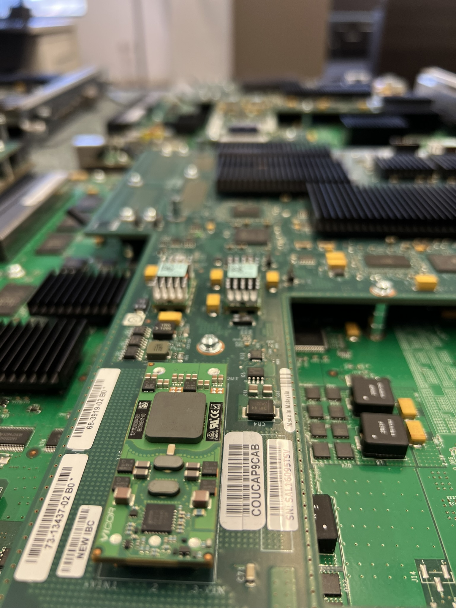
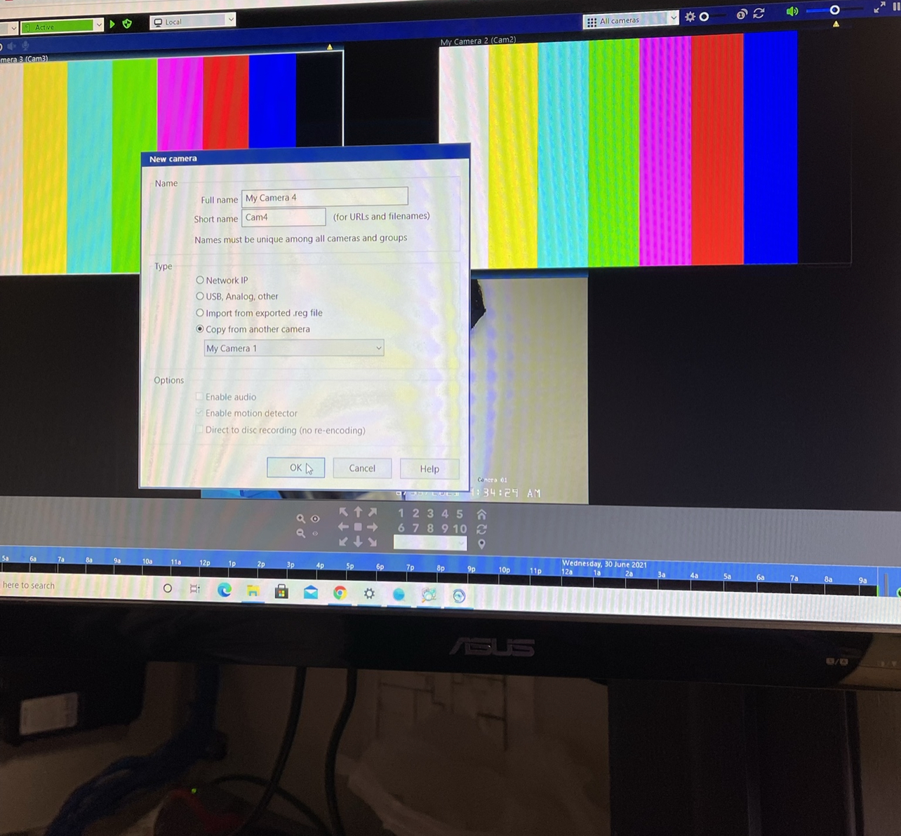
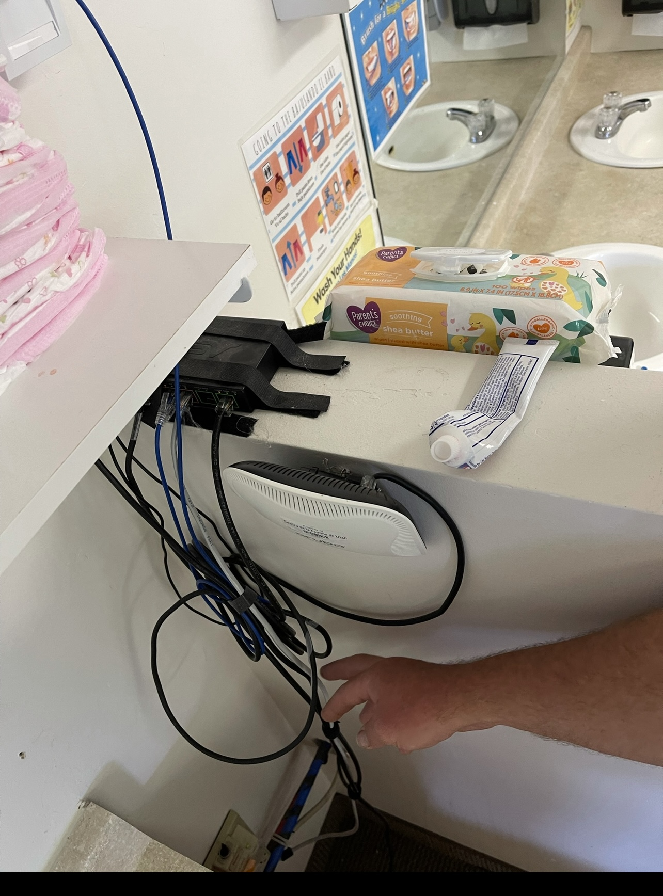

Highlights
Powering Success Through Collaboration: Leading with Purpose, Serving with Impact

As an IT professional and people-first leader, I believe success is built through trust, teamwork, and clear communication. Whether leading service desk operations, managing cross-functional projects, or supporting technical staff, I’m committed to building environments where everyone feels empowered to contribute and grow.
I bring a balance of technical skill and emotional intelligence to every role—whether solving infrastructure issues, mentoring junior team members, or aligning IT goals with business priorities. I’m known for stepping in when needed, removing roadblocks, and creating a culture where collaboration isn’t just encouraged—it’s expected.
As John C. Maxwell wrote in The 21 Irrefutable Laws of Leadership: “The true measure of leadership is influence—nothing more, nothing less.” My goal is to lead with influence, not authority, and to elevate both systems and people with every project I’m part of.
Let’s build the kind of IT team that gets noticed—not just for what we fix, but for how we lead.
Skills
technical Skills
- Python Programming
- AWS (Amazon Web services)
- Azure (Microsoft Azure)
- Basic SQL Database Management
- Bash Scripting.
- Network Security
- Penetration Testing
- Incident Response
- IT Infrastructure Management
- Virtualization (e.g., VirtualBox, KVM)
Leadership and Management Skills
- Budgeting
- Help Desk Management
- Excellent Leadership Skills
- Strong Project Management
- Vendor Management
- Relationship-building Skills
- Marketing
- Sales
- Business-to-Business (B2B) expertise
- Talent Acquisition and Team Building
Professional Compliment
"You have a lot of great potential and would be a huge asset to MRM".
A Glimpse into My IT Journey: Capturing Moments of Growth and Expertise
Step into the fascinating world of my IT career, where every snapshot showcases moments of innovation, passion, and expertise. Behind the lens, witness the transformation of cutting-edge technology, from cameras to computers, as I orchestrate seamless networking solutions and embark on the exciting realm of web development. Immerse yourself in the heartwarming scenes of my passion for teaching, as young minds are ignited with the wonders of code and digital creativity. Amidst it all, follow the trails of wires being meticulously run, forming the backbone of robust systems. Each image a testament to the dedication and diversity that define my IT journey, and I invite you to join me in relishing these unforgettable highlights.
Cost Optimization in Action: Reducing Waste, Increasing Value
In my last three roles, I’ve proactively identified and eliminated cost inefficiencies across cloud infrastructure, licensing, and vendor services. One notable example included shutting down unused AWS instances, saving the company $5K–$8K per month. But my focus on cost optimization didn’t stop there—I extended the same discipline to software audits, ISP consolidations, and unnecessary licensing renewals, saving companies tens of thousands annually.
As an IT leader, I’ve never seen cost control as “just a finance issue.” I believe every dollar should support operations, improve efficiency, or create long-term value. As John C. Maxwell states in The 21 Irrefutable Laws of Leadership: "The Law of Addition: Leaders add value by serving others." My approach is rooted in adding value through strategic IT management—finding savings, maximizing resources, and aligning technology with business goals.
Enterprise System Cleanup & Software Integration

Across multiple roles, I’ve led enterprise-wide efforts to clean up legacy systems and ensure secure, efficient IT environments. This includes restructuring Active Directory, fixing broken SharePoint permissions, and leading post-acquisition software integrations across newly merged companies.
These projects required detailed planning, cross-department collaboration, and change management to minimize disruption while improving system performance and compliance. The result? Streamlined workflows, tighter security, and systems that actually support the people using them.
Building from the Ground Up: Infrastructure That Supports Scale and Safety

In every company I’ve worked at, I’ve either built IT infrastructure from the ground up or had to overhaul neglected spaces. From brand-new clinic setups to fixing networking issues in outdated or makeshift offices, I’ve ensured that IT areas are safe, organized, and built for long-term reliability.
A clean and structured environment isn't just about appearance—it's about reducing downtime, improving troubleshooting, and avoiding safety hazards. I’ve worked with vendors to reroute cabling, mounted access points in secure areas, and restructured network closets to meet professional standards and support scalability.
Empowering Efficiency: Unveiling Solutions for Seamless Operations
At the core of my professional ethos lies an unwavering commitment to identifying and resolving issues swiftly, ensuring a smooth and efficient work environment. With a keen eye for recognizing challenges, I take proactive steps to implement simple yet impactful fixes that elevate employee productivity and job satisfaction. Empowering those around me is my utmost priority, and I am dedicated to offering innovative solutions to the hurdles they encounter. By embracing this goal wholeheartedly, I aim to foster a collaborative and supportive atmosphere, where every individual thrives and collectively contributes to the success of the organization. Together, let's unlock the full potential of our workplace through ingenuity and thoughtful problem-solving.